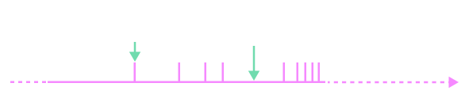
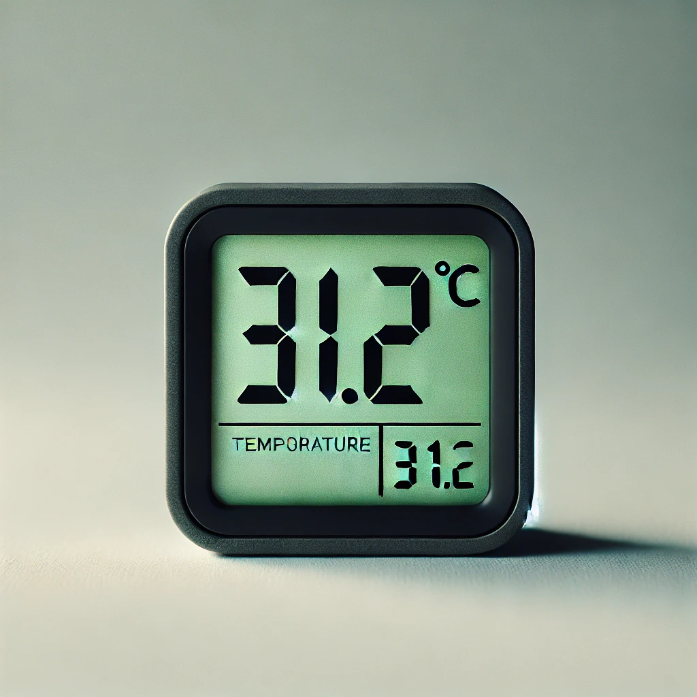

1ـ5 اندازهگیری و دقت وسیلههای اندازهگیری
در اندازهگیری کمیتهای فیزیکی مانند طول، جرم، زمان و ... قطعیت وجود ندارد و همواره مقداری خطا وجود دارد. با انتخاب وسیلههای دقیق و روش صحیح اندازهگیری، تنها میتوان خطای اندازهگیری را کاهش داد، ولی هیچ گاه نمیتوان آن را به صفر رساند. با وجود این، توجه به عوامل زیر نقش مهمی در افزایش دقت اندازهگیری دارد.
1ــ دقت وسیلۀ اندازهگیری:
یکی از عوامل مهم در دقت اندازهگیری، دقت و حساسیت وسیلۀ اندازهگیری است. برای مثال، دقت خطکشی که تا میلیمتر مدرج شده، بیشتر از دقت خطکشی است که تا سانتیمتر درجهبندی شده است.
2ــ مهارت شخص آزمایشگر:
یکی دیگر از عوامل مهم و تأثیرگذار روی دقت اندازهگیری، مهارتهای شخص آزمایشگر است. یکی از این مهارتها، نحوۀ خواندن نتیجۀ اندازهگیری است. شکل 1ــ8 تأثیر اختلاف منظر در خواندن نتیجۀ اندازهگیری را نشان میدهد. خواندن نتیجۀ اندازهگیری از منظرهای A و C خطا را افزایش میدهد در حالی که گزارش شخصی که از منظر B نتیجۀ اندازهگیری را میخواند دقت بیشتری دارد.

3ــ تعداد دفعات اندازهگیری:
برای کاهش خطا در اندازهگیری هر کمیت، معمولاً اندازهگیری آن را چند بار تکرار میکنند. میانگین عددهای حاصل از اندازهگیری به عنوان نتیجۀ اندازهگیری گزارش میشود. البته در میان عددهای متفاوت، اگر یک یا دو عدد اختلاف زیادی با بقیه داشته باشند در میانگینگیری به حساب نمیآیند (شکل 1ــ9).

شکل 1ــ 9 نتایج اندازهگیری شده حول اندازۀ واقعی. هر نشانۀ قرمز رنگ، نشاندهندۀ نتیجۀ یک اندازهگیری است.
دقت اندازهگیری در ابزارهای رقمی (دیجیتال)، برابر یک واحد از آخرین رقمی است که آن ابزار میخواند. برای مثال، آخرین رقمی که دماسنج شکل زیر نشان میدهد 0/2°C و دقت آن 0/1°C است.

فعالیت 1ـ4:
الف) آزمایشی طراحی و اجرا کنید که به کمک آن بتوان جرم و حجم یک قطره آب را اندازهگیری کرد.
ب) تکهای سیم لاکی نازک یا نخ قرقره به طول تقریبی یک متر تهیه کنید. آزمایشی طراحی و اجرا کنید که به کمک یک خطکش میلیمتری بتوان قطر این سیم یا نخ را اندازهگیری کرد.
خوب است بدانید:
دقت و درستی: دقت همواره به معنای صحت و درستی نیست. برای مثال، یک ساعت رقمی معمولی که 10:35:17 را نشان میدهد بسیار دقیق است (زمان را تا ثانیه اعلام میکند)، ولی اگر این ساعت چند دقیقه آهسته کار کند، دیگر مقداری که نشان میدهد درست نیست. از سوی دیگر، یک ساعت قدیمی دیواری ممکن است زمان صحیح را نشان دهد، ولی اگر این ساعت عقربۀ ثانیهشمار نداشته باشد دقت آن کم است. اندازهگیریهای با کیفیت بالا نظیر اندازهگیریهایی که برای تعریف استانداردها صورت گرفتهاند هم دقیق و هم درستاند. برای درک بهتر تفاوت دقت و درستی، به مثالی از بازی پرتاب دارت توجه کنید. در شکل (الف)، دقت و درستی، در شکل (ب) تنها دقت و در شکل (پ) نه دقت و نه درستی وجود دارد.

خوب است بدانید:
محاسبههای جبری با رقمهای بامعنا
رقمهایی را که بعد از اندازهگیری یک کمیت فیزیکی ثبت میکنید رقمهای بامعنا میگویند. هنگامی که عددها در هم ضرب یا برهم تقسیم میشوند تعداد رقمهای بامعنا در نتیجۀ محاسبه نمیتواند بیشتر از تعداد رقمهای بامعنای عددی باشد که کمترین رقم بامعنا را دارد؛ مثلاً حاصل عبارت $7.12 \times 2.923 \times 3.1415$ هر چند برابر $65.38014404$ میشود، ولی باید با سه رقم بامعنا، یعنی $65.4$ بیان شود. در جمع یا تفریق عددها آنچه اهمیت دارد محل ممیز است و نه تعداد رقمهای بامعنا. برای نمونه، حاصل عبارت $4.8 + 245.41$ باید بهصورت $250.2$ بیان شود. اگر نتیجه بهصورت $250.21$ بیان شود نادرست است. همچنین حاصل عبارت $21.4356 - 41.342 + 0.12$ باید بهصورت $31.9$ بیان شود.
چگونگی تشخیص رقمهای بامعنا: در جدول زیر و ادامۀ آن نحوۀ تعیین تعداد رقمهای بامعنا به همراه مثال آمده است:
| قاعده |
مثال |
| تمام عددهای غیر صفر بامعنا هستند. |
$6.788$ چهار رقم بامعنا دارد. |
| تمام صفرهایی که بین عددهای غیر صفر قرار دارند بامعنا هستند. |
$408$ سه رقم بامعنا دارد. |
| صفرهایی که در طرف چپ اعداد قرار دارند، بامعنا نیستند. |
$0.007$ سه رقم بامعنا دارد. |
صفرهایی که در طرف راست اعداد قرار دارند میتوانند بامعنا باشند یا نباشند؛ برای مثال، اگر طول میلهای $230 \text{mm}$ گزارش شده باشد، تعداد رقمهای بامعنا ممکن است دو یا سه رقم باشد. اگر نتیجۀ اندازهگیری با نمادگذاری علمی، بهصورت $230 \text{mm} = 2.3 \times 10^2 \text{mm}$ نوشته شود، دارای دو رقم بامعنا و اگر بهصورت $230 \text{mm} = 2.30 \times 10^2 \text{mm}$ نوشته شود دارای سه رقم بامعنا است.
در برخی از کتابهای درسی، برای سادگی، تمام صفرهای سمت راست اعداد را بامعنا فرض میکنند. در کتاب فیزیک (1) نیز ما از این فرض استفاده کردهایم. بنابراین وقتی طول میلهای $230 \text{mm}$ گزارش شده باشد، تعداد رقمهای بامعنا در این گزارش را سه رقم میگیریم.